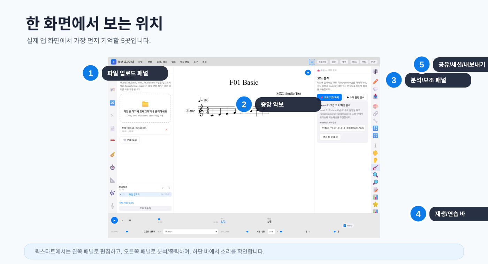
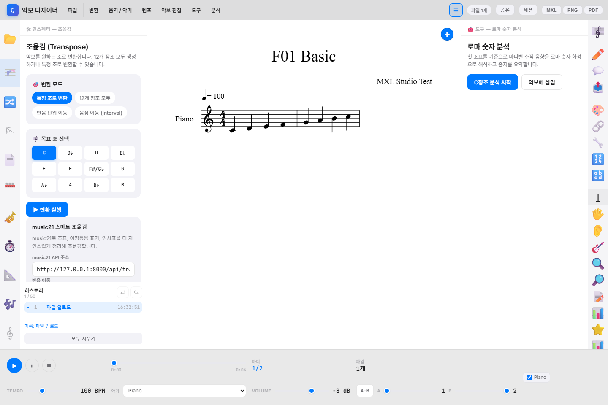
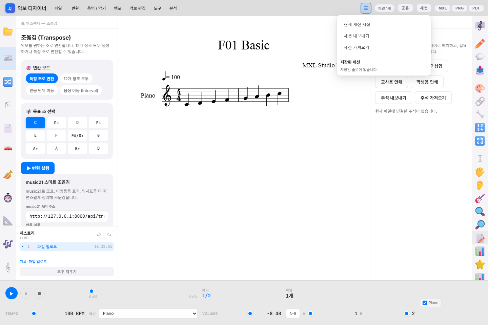
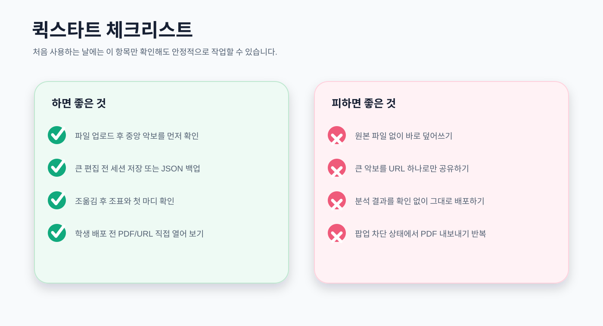

MXL Studio
퀵스타트 설명서
악보 디자이너 웹앱을 처음 열고 10분 안에 MusicXML 업로드, 조옮김, 분석, 저장, 공유, PDF 내보내기까지 따라 하는 한글 빠른 시작 안내서입니다.
먼저 이것만 기억하세요
MXL Studio는 중앙 악보를 보면서 왼쪽에서 편집하고, 오른쪽에서 분석/출력하고, 상단에서 공유와 내보내기를 실행하는 구조입니다.

상단 메뉴, 중앙 악보, 좌우 도구 위치를 확인합니다.
MusicXML/MXL 파일을 드래그하거나 클릭해 불러옵니다.
변환 메뉴 또는 왼쪽 조옮김 아이콘에서 목표 조를 선택합니다.
코드, 로마 숫자, 주석 메모를 추가해 수업 해설을 만듭니다.
세션 저장, JSON 백업, URL, QR 코드 중 목적에 맞게 고릅니다.
PDF, PNG, MXL로 완성본을 저장하거나 배포합니다.
1단계. 앱 화면 익히기
처음 화면에서는 아직 악보가 없으므로, 왼쪽 업로드 영역과 중앙 악보 영역의 위치만 확인하면 됩니다.


2단계. MusicXML 파일 업로드
따라 하기
- 왼쪽 파일 업로드 패널을 엽니다.
- 점선 상자를 클릭하거나 파일을 끌어다 놓습니다.
- 파일 목록에 파일명, 파트 수, 음표 수가 보이는지 확인합니다.
- 중앙 악보 제목과 첫 마디가 정상 표시되는지 확인합니다.
지원 형식
| 형식 | 설명 |
|---|---|
| .mxl | 압축 MusicXML. 원본 보관에 좋습니다. |
| .xml/.musicxml | 일반 MusicXML. 바로 읽기 쉽습니다. |
| .mscz | 로컬 변환 API가 켜져 있을 때 변환 가능합니다. |

3단계. 조옮김 한 번 실행하기
가장 많이 쓰는 첫 편집은 조옮김입니다. 목표 조를 고르고 변환 실행을 누른 뒤 중앙 악보를 확인합니다.


- 상단 변환 메뉴에서 조옮김을 선택하거나 왼쪽 조옮김 아이콘을 누릅니다.
- 특정 조로 변환, 반음 단위 이동, 음정 이동 중 하나를 선택합니다.
- 목표 조 또는 이동 값을 지정합니다.
- 변환 실행을 누릅니다.
- 중앙 악보에서 조표와 첫 음이 의도대로 바뀌었는지 확인합니다.
4단계. 분석과 주석 추가
수업 자료라면 단순한 악보보다 해설이 붙은 악보가 더 유용합니다. 오른쪽 패널에서 코드, 로마 숫자, 주석 메모를 추가해 보세요.


- 오른쪽 아이콘 막대에서 코드 분석 또는 로마 숫자 분석을 엽니다.
- 분석 버튼을 눌러 결과를 확인합니다.
- 학생에게 설명할 지점은 주석 메모 패널에서 짧게 기록합니다.
- 히스토리에서 작업 순서를 확인하고, 필요하면 되돌립니다.
5단계. 저장, 공유, 백업
작업 중에는 자동 저장이 동작하지만, 중요한 수업 자료는 세션 또는 파일로 한 번 더 보관하는 것이 안전합니다.



| 목적 | 추천 기능 | 한 줄 설명 |
|---|---|---|
| 잠시 후 이어 작업 | 자동 저장/세션 | 같은 브라우저에서 빠르게 복원합니다. |
| 다른 컴퓨터로 이동 | JSON 내보내기 | 작업 상태를 파일로 옮깁니다. |
| 학생에게 빠른 전달 | 공유 URL/QR | 작은 단일 악보에 적합합니다. |
| 인쇄 배포 | 완성본 형태를 유지합니다. |
6단계. 내보내기와 모바일 확인
마지막에는 결과물을 직접 열어 보는 것이 좋습니다. 특히 PDF나 공유 링크는 학생에게 보내기 전에 한 번 확인하세요.


- 인쇄나 배포가 목적이면 PDF를 선택합니다.
- 슬라이드나 웹 문서에 넣을 때는 PNG를 선택합니다.
- 원본을 다시 편집하려면 MXL을 보관합니다.
- 내보낸 파일이나 공유 링크를 직접 열어 결과를 확인합니다.
마지막 30초 체크

빠른 화면 갤러리
기능 위치가 헷갈릴 때 아래 작은 화면들을 보며 찾아가세요.